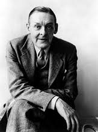

"Those concepts that are found mingled with intuitions are no longer concepts, in so far as they are really mingled and fused, for they have lost all independence and autonomy. They have been concepts, but have now become simple elements of intuitions." (Benedetto Croce)
THE METAPHYSICAL POETS
T. S. ELIOT
This review of Metaphysical Lyrics and Poems of the Seventeenth Century: Donne to Butler, selected and edited, with an essay, by Herbert J. C. Grierson (Oxford: Clarendon Press), was first published in the Times Literary Supplement, 20 October 1921.
 |
T. S. Eliot |
By collecting these poems from the work of a generation more often named than read, and more often read than profitably studied, Professor Grierson has rendered a service of some importance. Certainly the reader will meet with many poems already preserved in other anthologies, at the same time that he discovers poems such as those of Aurelian Townshend or Lord Herbert of Cherbury here included. But the function of such an anthology as this is neither that of Professor Saintsbury's admirable edition of Caroline poets nor that of the Oxford Book of English Verse. Mr. Grierson's book is in itself a piece of criticism, and a provocation of criticism; and we think that he was right in including so many poems of Donne, elsewhere (though not in many editions) accessible, as documents in the case of 'metaphysical poetry'. The phrase has long done duty as a term of abuse, or as the label of a quaint and pleasant taste. The question is to what extent the so-called metaphysicals formed a school (in our own time we should say a 'movement'), and how far this so-called school or movement is a digression from the main current.
Not only is it extremely difficult to define metaphysical poetry, but difficult to decide what poets practice it and in which of their verses. The poetry of Donne (to whom Marvell and Bishop King are sometimes nearer than any of the other authors) is late Elizabethan, its feeling often very close to that of Chapman. The 'courtly' poetry is derivative from Jonson, who borrowed liberally from the Latin; it expires in the next century with the sentiment and witticism of Prior. There is finally the devotional verse of Herbert, Vaughan, and Crashaw (echoed long after by Christina Rossetti and Francis Thompson); Crashaw, sometimes more profound and less sectarian than the others, has a quality which returns through the Elizabethan period to the early Italians. It is difficult to find any precise use of metaphor, simile, or other conceit, which is common to all the poets and at the same time important enough as an element of style to isolate these poets as a group. Donne, and often Cowley, employ a device which is sometimes considered characteristically 'metaphysical'; the elaboration (contrasted with the condensation) of a figure of speech to the furthest stage to which ingenuity can carry it. Thus Cowley develops the commonplace comparison of the world to a chess-board through long stanzas (To Destiny), and Donne, with more grace, in A Valediction, the comparison of two lovers to a pair of compasses. But elsewhere we find, instead of the mere explication of the content of a comparison, a development by rapid association of thought which requires considerable agility on the part of the reader.
On a round ball
A workeman that hath copies by, can lay
An Europe, Afrique, and an Asia
And quickly make that, which was nothing, All,
So cloth each teare,
Which thee cloth weare,
A globe, yea world by that impression grow,
Till thy tears mixt with mine doe overflow
This world, by waters sent from thee, my heaven dissolved so.
Here we find at least two connections which are not implicit in the first figure, but are forced upon it by the poet: from the geographer's globe to the tear, and the tear to the deluge. On the other hand, some of Donne's most successful and characteristic effects are secured by brief words and sudden contrasts:
A bracelet of bright hair about the bone,
where the most powerful effect is produced by the sudden contrast of associations of 'bright hair' and of 'bone'. This telescoping of images and multiplied associations is characteristic of the phrase of some of the dramatists of the period which Donne knew: not to mention Shakespeare, it is frequent in Middleton, Webster, and Tourneur, and is one of the sources of the vitality of their language.
Johnson, who employed the term 'metaphysical poets', apparently having Donne, Cleveland, and Cowley chiefly in mind, remarks of them that 'the most heterogeneous ideas are yoked by violence together'. The force of this impeachment lies in the failure of the conjunction, the fact that often the ideas are yoked but not united; and if we are to judge of styles of poetry by their abuse, enough examples may be found in Cleveland to justify Johnson's condemnation. But a degree of heterogeneity of material compelled into unity by the operation of the poet's mind is omnipresent in poetry. We need not select for illustration such a line as:
Notre ame est un trois-mats cherchant son Icarie;
we may find it in some of the best lines of Johnson himself (The Vanity of Human Wishes):
His fall was destined to a barren strand,
A petty fortress, and a dubious hand;
He left a name at which the world grew pale,
To point a moral, or adorn a tale.
where the effect is due to a contrast of ideas, different in degree but the same in principle, as that which Johnson mildly reprehended. And in one of the finest poems of the age (a poem which could not have been written in any other age), the Exequy of Bishop King, the extended comparison is used with perfect success: the idea and the simile become one, in the passage in which the Bishop illustrates his impatience to see his dead wife, under the figure of a journey:
Stay for me there; I will not faile
To meet thee in that hollow Vale.
And think not much of my delay;
I am already on the way,
And follow thee with all the speed
Desire can make, or sorrows breed.
Each minute is a short degree,
And ev'ry houre a step towards thee.
At night when I retake to rest,
Next morn I rise nearer my West
Of life, almost by eight houres sail,
Than when sleep breath'd his drowsy gale....
But heark! My Pulse, like a soft Drum
Beats my approach, tells Thee I come;
And slow howere my marches be,
I shall at last sit down by Thee.
(In the last few lines there is that effect of terror which is several times attained by one of Bishop King's admirers, Edgar Poe.) Again, we may justly take these quatrains from Lord Herbert's Ode, stanzas which would, we think, be immediately pronounced to be of the metaphysical school:
So when from hence we shall be gone,
And be no more, nor you, nor I,
As one another's mystery,
Each shall be both, yet both but one.This said, in her up-lifted face,
Her eyes, which did that beauty crown,
Were like two starrs, that having faln down,
Look up again to find their place:While such a moveless silent peace
Did seize on their becalmed sense,
One would have thought some influence
Their ravished spirits did possess.
There is nothing in these lines (with the possible exception of the stars, a simile not at once grasped, but lovely and justified) which fits Johnson's general observations on the metaphysical poets in his essay on Cowley. A good deal resides in the richness of association which is at the same time borrowed from and given to the word 'becalmed'; but the meaning is clear, the language simple and elegant. It is to be observed that the language of these poets is as a rule simple and pure; in the verse of George Herbert this simplicity is carried as far as it can go—a simplicity emulated without success by numerous modern poets. The structure of the sentences, on the other hand, is sometimes far from simple, but this is not a vice; it is a fidelity to thought and feeling. The effect, at its best, is far less artificial than that of an ode by Gray. And as this fidelity induces variety of thought and feeling, so it induces variety of music. We doubt whether, in the eighteenth century, could be found two poems in nominally the same metre, so dissimilar as Marvell's Coy Mistress and Crashaw's Saint Teresa; the one producing an effect of great speed by the use of short syllables, and the other an ecclesiastical solemnity by the use of long ones:—
Love thou art absolute sole lord
Of life and death.
If so shrewd and sensitive (though so limited) a critic as Johnson failed to define metaphysical poetry by its faults, it is worth while to inquire whether we may not have more success by adopting the opposite method: by assuming that the poets of the seventeenth century (up to the Revolution) were the direct and normal development of the precedent age; and, without prejudicing their case by the adjective 'metaphysical', consider whether their virtue was not something permanently valuable, which subsequently disappeared, but ought not to have disappeared. Johnson has hit, perhaps by accident, on one of their peculiarities, when he observed that 'their attempts were always analytic'; he would not agree that, after the dissociation, they put the material together again in a new unity.
It is certain that the dramatic verse of the later Elizabethan and early Jacobean poets expresses a degree of development of sensibility which is not found in any of the prose, good as it often is. If we except Marlowe, a man of prodigious intelligence, these dramatists were directly or indirectly (it is at least a tenable theory) affected by Montaigne. Even if we except also Jonson and Chapman, these two were notably erudite, and were notably men who incorporated their erudition into their sensibility: their mode of feeling was directly and freshly altered by their reading and thought. In Chapman especially there is a direct sensuous apprehension of thought, or a recreation of thought into feeling, which is exactly what we find in Donne:—
in this one thing, all the discipline
Of manners and of manhood is contained;
A man to join himself with th' Universe
In his main sway, and make in all things fit
One with that All, and go on, round as it;
Not plucking from the whole his wretched part
And into straits, or into nought revert,
Wishing the complete Universe might be
Subject to such a rag of it as he;
But to consider great Necessity.
We compare this with some modern passage:—
No, when the fight begins within himself
A man's worth something. God stoops o'er his head,
Satan looks up between his feet—both tug—
He's left, himself i' the middle: the soul wakes
And grows. Prolong that battle through his life!
It is perhaps somewhat less fair, though very tempting as both poets are concerned with the perpetuation of love by offspring, to compare with the stanzas already quoted from Lord Herbert's Ode the following from Tennyson:
One walked between his wife and child,
With measured footfall firm and mild,
And now and then he gravely smiled.
The prudent partner of his blood
Leaned on him, faithful, gentle, good
Wearing the rose of womanhood.
And in their double love secure,
The little maiden walked demure,
Pacing with downward eyelids pure.
These three made unity so sweet,
My frozen heart began to beat,
Remembering its ancient heat.
The difference is not a simple difference of degree between poets. It is something which had happened to the mind of England between the time of Donne or Lord Herbert of Cherbury and the time of Tennyson and Browning; it is the difference between the intellectual poet and the reflective poet. Tennyson and Browning are poets, and they think; but they do not feel their thought as immediately as the odour of a rose. A thought to Donne was an experience; it modified his sensibility. When a poet's mind is perfectly equipped for its work, it is constantly amalgamating disparate experience; the ordinary man's experience is chaotic, irregular, fragmentary. The latter falls in love, or reads Spinoza, and these two experiences have nothing to do with each other, or with the noise of the typewriter or the smell of cooking; in the mind of the poet these experiences are always forming new wholes.
We may express the difference by the following theory: The poets of the seventeenth century, the successors of the dramatists of the sixteenth, possessed a mechanism of sensibility which could devour any kind of experience. They are simple, artificial, difficult, or fantastic, as their predecessors were; no less nor more than Dante, Guido Cavalcanti, Guinicelli, or Cino. In the seventeenth century a dissociation of sensibility set in, from which we have never recovered; and this dissociation, as is natural, was aggravated by the influence of the two most powerful poets of the century, Milton and Dryden. Each of these men performed certain poetic functions so magnificently well that the magnitude of the effect concealed the absence of others. The language went on and in some respects improved; the best verse of Collins, Gray, Johnson, and even Goldsmith satisfies some of our fastidious demands better than that of Donne or Marvell or King. But while the language became more refined, the feeling became more crude. The feeling, the sensibility, expressed in the Country Churchyard (to say nothing of Tennyson and Browning) is cruder than that in the Coy Mistress.
The second effect of the influence of Milton and Dryden followed from the first, and was therefore slow in manifestation. The sentimental age began early in the eighteenth century, and continued. The poets revolted against the ratiocinative, the descriptive; they thought and felt by fits, unbalanced; they reflected. In one or two passages of Shelley's Triumph of Life, in the second Hyperion there are traces of a struggle toward unification of sensibility. But Keats and Shelley died, and Tennyson and Browning ruminated.
After this brief exposition of a theory—too brief, perhaps, to carry conviction—we may ask, what would have been the fate of the 'metaphysical' had the current of poetry descended in a direct line from them, as it descended in a direct line to them? They would not, certainly, be classified as metaphysical. The possible interests of a poet are unlimited; the more intelligent he is the better; the more intelligent he is the more likely that he will have interests: our only condition is that he turn them into poetry, and not merely meditate on them poetically. A philosophical theory which has entered into poetry is established, for its truth or falsity in one sense ceases to matter, and its truth in another sense is proved. The poets in question have, like other poets, various faults. But they were, at best, engaged in the task of trying to find the verbal equivalent for states of mind and feeling. And this means both that they are more mature, and that they wear better, than later poets of certainly not less literary ability.
It is not a permanent necessity that poets should be interested in philosophy, or in any other subject. We can only say that it appears likely that poets in our civilization, as it exists at present, must be difficult. Our civilization comprehends great variety and complexity, and this variety and complexity, playing upon a refined sensibility, must produce various and complex results. The poet must become more and more comprehensive, more allusive, more indirect, in order to force, to dislocate if necessary, language into his meaning. (A brilliant and extreme statement of this view, with which it is not requisite to associate oneself, is that of M. Jean Epstein, La Poesie d'aujourd-hui.) Hence we get something which looks very much like the conceit—we get, in fact, a method curiously similar to that of the 'metaphysical poets', similar also in its use of obscure words and of simple phrasing.
O geraniums diaphanes, guerroyeurs sortileges,
Sacrileges monomanes!
Emballages, devergondages, douches! O pressoirs
Des vendanges des grands soirs!
Layettes aux abois,
Thyrses au fond des bois!
Transfusions, represailles,
Relevailles, compresses et l'eternal potion,
Angelus! n'en pouvoir plus
De de'bacles nuptiales! de debacles nuptiales!
The same poet could write also simply:
Wile est bien loin, elle pleure,
Le grand vent se lamente aussi . . .
Jules Laforgue, and Tristan Corbiere in many of his poems, are nearer to the 'school of Donne' than any modern English poet. But poets more classical than they have the same essential quality of transmuting ideas into sensations, of transforming an observation into a state of mind.
Pour l'enfant, amoureux de cartes et d'estampes,
L'univers est egal a son vaste appetit.
Ah, que le monde est grand a la clarte des lampes!
Aux yeux du souvenir que le monde est petit!
In French literature the great master of the seventeenth century Racine—and the great master of the nineteenth—Baudelaire—are in some ways more like each other than they are like anyone else. The greatest two masters of diction are also the greatest two psychologists, the most curious explorers of the soul. It is interesting to speculate whether it is not a misfortune that two of the greatest masters of diction in our language, Milton and Dryden, triumph with a dazzling disregard of the soul. If we continued to produce Miltons and Drydens it might not so much matter, but as things are it is a pity that English poetry has remained so incomplete. Those who object to the 'artificiality' of Milton or Dryden sometimes tell us to 'look into our hearts and write'. But that is not looking deep enough; Racine or Donne looked into a good deal more than the heart. One must look into the cerebral cortex, the nervous system, and the digestive tracts.
May we not conclude, then, that Donne, Crashaw, Vaughan, Herbert and Lord Herbert, Marvell, King, Cowley at his best, are in the direct current of English poetry, and that their faults should be reprimanded by this standard rather than coddled by antiquarian affection? They have been enough praised in terms which are implicit limitations because they are 'metaphysical' or 'witty', 'quaint' or 'obscure', though at their best they have not these attributes more than other serious poets. On the other hand we must not reject the criticism of Johnson (a dangerous person to disagree with) without having mastered it, without having assimilated the Johnsonian canons of taste. In reading the celebrated passage in his essay on Cowley we must remember that by wit he clearly means something more serious than we usually mean today; in his criticism of their versification we must remember in what a narrow discipline he was trained, but also how well trained; we must remember that Johnson tortures chiefly the chief offenders, Cowley and Cleveland. It would be a fruitful work, and one requiring a substantial book, to break up the classification of Johnson (for there has been none since) and exhibit these poets in all their difference of kind and of degree, from the massive music of Donne to the faint, pleasing tinkle of Aurelian Townshend—whose Dialogue between a Pilgrim and Time is one of the few regrettable omissions from the excellent anthology of Professor Grierson.